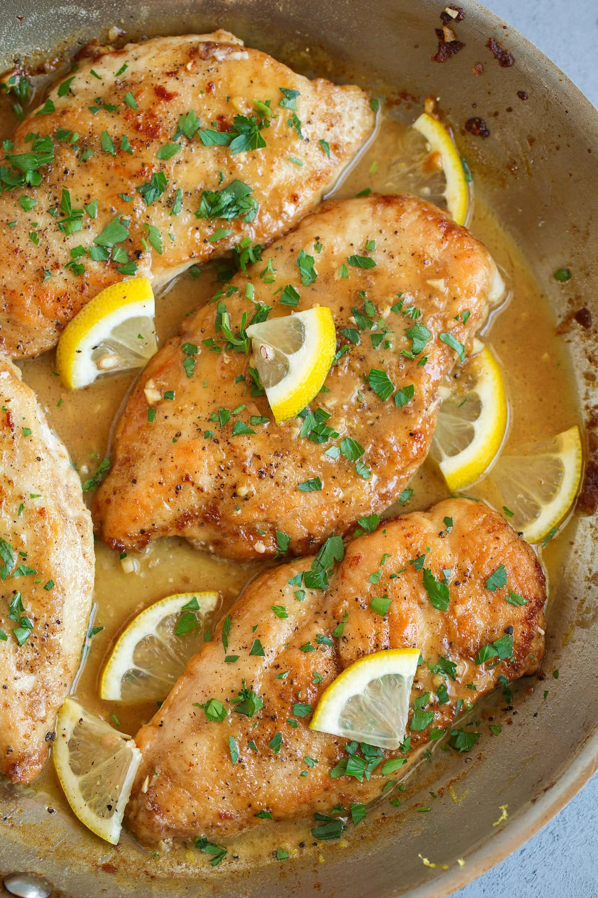

Lemon Chicken

Description
A Healthy, Baked Chicken Breast That’s Anything but Boring (We Promise!).
Ingredients
-
Roughly 2.5lbs chicken breast
-
1/4 cup olive oil
-
2 tsp of each oregano, thyme, garlic, salt, and pepper
-
1/2 dry white wine
-
1 tbsp lemon zest
-
1 tbsp brown sugar
-
1 lemon, cut into 6 slices
Steps
-
Heat the oven to 400 degrees F.
-
Pat the chicken breasts dry and place them in a 9 x 13 baking dish.
-
In a small bowl, mix the olive oil, oregano, thyme, garlic powder, 1 teaspoon salt and pepper to create a thick marinade/paste. Coat the chicken breast with seasoning paste.
-
Using the same bowl mix together the white wine, garlic, lemon zest, lemon juice, brown sugar and remaining 1 teaspoon salt. Pour over chicken breast.
-
If using, nestle the lemon slices between the chicken bake for 15 minutes, baste the chicken with the pan juice, bake for another 15 minutes or until the internal temperature of the chicken reads 165 F.